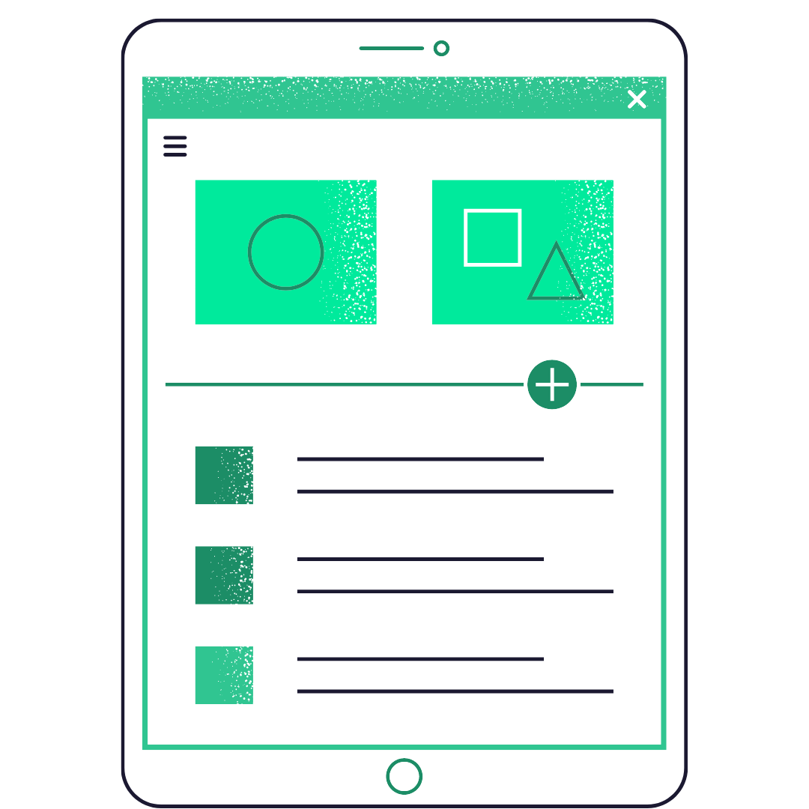

Large businesses and multinational corporations spend millions of dollars a year to capture our limited attention. Although this often conveniences our experiences and helps us connect to bigger brands at a more personal level, this is all done at the expense of small and local businesses that simply cannot compete. The Yerli exclusively highlights all small businesses, paying extra attention to historically marginalized groups such as minority, veteran, and female-owned small businesses, to allow them a chance to show the world who they truly are.
The Yerli is intended to be used to instantly feel connected to any community. Whether you want to explore new businesses in a place you already live in or want to get the perspective of a local while traveling, The Yerli will help you see from the eyes of locals.

The Yerli not only promotes local businesses without competition from large corporations, but we also want to share the story of each owner and make them more resilient to adversity. First, we collect stories from every business owner about why they undertook such a risky career and why they come to work every day. Second, we have a unique review algorithm that makes a business less tied to each review while giving them a way to promote themselves through an influx of connected posts.
Follow our journey and help us save local business by downloading the app
or following us on social media